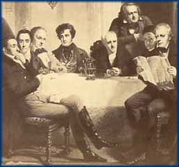

|
Home | Corson
Collection | Biography | Works | Image
Collection | Recent Publications |
Forthcoming Events | Correspondence | Links | E-texts | Contact | Accessibility
Portraits
Follow the links below to pages on the major portraits of Sir
Walter Scott, on the original artists, and on the engravers and
copyists who did so much to stamp the image of Scott on the nineteenth-century
mind:
- Original
Portraits
- Pages on the composition of original portraits of Scott
with extracts from Scott's correspondence and Journal.
-
- Original
Artists
- Pages on the artists and sculptors who prepared original
portraits of Scott with further samples of their work.
-
- Engravings
and Copies
- Images of engravings and copies of portraits of Scott
held in the Corson Collection.
-
- Engravers
and Copyists
- Information on engravers and copyists of portraits of
Scott, with further samples of their work.
|

Click on the
thumbnail to see a photograph of 'Sir Walter
Scott and His Literary Friends at Abbotsford'
by Thomas Faed. It was painted in 1849 working
from existing portraits of Scott and his contemporaries.
|
|

Last updated: 22-Mar-2005
© Edinburgh University Library
|